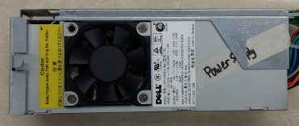

Computers are devices which are able to run various “programs” for various uses. Humans have created various inventions to speed up simple processes and aid with things like calculation throughout history, and the computer is the latest invention which executes processes and operations at speeds which the Human brain can’t compare to. In today’s technological world, a computer can be used for many purposes. From calculating double digit multiplication in a millisecond to rendering photorealistic graphics for multi- million dollar companies, computers can range from cheap consumer grade computers to supercomputers used for intensive work. Computers are generally accompanied by a monitor to display images and graphics, a keyboard to input letters and numbers, a mouse to move a cursor around and input mouse presses, allowing for ease of navigating the computer, and some sort of speaker or headphone to output sound.
Oh hey lookie, there's a case with everything in it.
Oh lookie now, we took everything out.
Look, it's the power supply
Computers have many parts which require power to operate. For that, we need a power supply unit (or PSU), which takes in power and converts it for use in computers. Power supplies have large amounts of power running through them, so in order to prevent it from overheating, they have a fan to cool it. The PSU can be one of the most important parts of a computer because, without enough power, the computer won’t be able to run. Better parts require a better PSU.
Look, it's the BOIS
BIOS stands for Basic Input/Output System. This is the program that your computer uses to start up. It also transfers data between the computer and any peripheral. The BIOS is a type of ROM and it is powered by a battery, so it doesn’t rely on the computer’s power supply. The BIOS is the device that starts your computer. It does it by turning on certain parts of the computer. Then it loads the data from the other components of the computer into the RAM.
BIOS stands for Basic Input/Output System. This is the program that your computer uses to start up. It also transfers data between the computer and any peripheral. The BIOS is a type of ROM and it is powered by a battery, so it doesn’t rely on the computer’s power supply. The BIOS is the device that starts your computer. It does it by turning on certain parts of the computer. Then it loads the data from the other components of the computer into the RAM.
Look, it's the Video Card
A video card, also called a graphics card, processes information from the CPU and converts it into graphics, displays images on the monitor. These are often referred to as dedicated graphics card, as opposed to an integrated graphics card. Integrated graphics cards are built into the CPU. Integrated graphics cards are often fine for simple use, but for higher intensity work such as modeling and rendering graphics, or for running video games, dedicated graphics cards are necessary today.
Look, it's the motherboard

The motherboard is a circuit that is the “spine” or “hub” of the PC. This is because it connects all the parts of the PC together. It connects things like the CPU, RAM and etc. This allows them to “communicate” with each other. The motherboard will control the part that the computer uses and how much RAM each part needs to function. The form factor is the term used to describe how the motherboard is organized. This affects the part that can be installed and the shape of the computer case. The motherboard can affect the amount of RAM that can be used and the type of RAM that can be installed onto the motherboard. The form factor can also affect things like the CPU.
Look, it's the CD-ROM
A CD-ROM is a compact optical drive, adapted from the CD (Compact Disc) for use in storing data. The CD, a common item in today's society, is used to store sound (more specifically, music), but a CD-ROM is used in storing data. CD-ROM stands for: “Compact Disk - Read Only Memory”, meaning it can only be read by computers and not written to. These are often used by companies to distribute software, such as video games or system software.
Look, it's the Hard Disk Drive
The hard drive is basically the computer’s storage. Everything on your computer is on your hard drive. This includes files, programs, pictures, videos and etc. It also stores the operating system and software programs that are on the computer. The hard drive consists of 6 parts.The head actuator, read/write actuator arm, read/write head, spindle, and platter are located at the front of the hard drive. The final piece, disk controller, is a circuit and it is on the back of the hard drive. This is the piece that communicates with the computer. The data that the computer wants is sent to the disc recorder. The hard drive uses binary to store information. It has magnetic polarities that represent 0 and 1. The actuator arm has an electromagnetic head that allows it to read the magnetic polarities. The disc controller then translates this into binary, so that the computer can understand it. When the computer wants to read a certain piece of information, it will look at the hard drive’s File Allocation Table (FAT). Then the disc controller would move the actuator arm to the place where the information is. The hard drive uses binary to store information. It has magnetic polarities that represent 0 and 1. The actuator arm has an electromagnetic head that allows it to read the magnetic polarities. The disc controller then translates this into binary.
Look, it's the Floppy Disc Drive
A floppy disk, also called a floppy or just a disk, is a form of disk storage, made of a thin disk, as well as a flexible magnetic storage, contained in a rectangular plastic case. From the 70s up until the early 2000s, floppy disks were the primary medium for data storage. Floppy disks in today’s technological world are no longer useful, as they are inefficient, slow and can hold small amounts of data in comparison to modern technologies. Most computers nowadays don’t even have a port for the floppy disk drive. The only place wherein these are useful is old computers from an age long past.
Look, it's the RAM
Ram stands for Random Access Memory. It is a memory that can be accessed randomly, hence the name. It allows you to change a byte without affecting the bytes that are before or after it. There are two types of RAM: DRAM and SRAM. DRAM needs to be refreshed thousands of times every second, while SRAM doesn’t. This makes the DRAM a lot slower than SRAM, but a lot cheaper. This is why a lot of computers use DRAM instead to SRAM. RAM is a faster storage device than a hard drive because it loads data much faster. It can also read and write data.
Look, it's the CPU and its case
The CPU is often referred to as the brain of the computer. It’s not as complicated as you think and it only executes 2 things: give commands to the rest of the components and process data. Without other software, it wouldn’t be able to run a computer. CPUs have a clock speed, measured in hertz. If a CPU has a clock speed of 1 Hz, that means it can execute 1 piece of instruction every second. In a more realistic example, a CPU with a clock speed of 3GHz can process 3 billion pieces of instruction every second. Some computers have multiple CPUs to speed up the process but it’s not commonly found in PCs, more so in supercomputers and servers. CPUs can also have multiple cores which mean there is more than 1 processing unit in the CPU chip. It is still a single chip, there’s just more in it. The more units there are in the chip, the faster the computer can execute instructions, (It’s like having a chocolate chip cookie and putting more chocolate chips in it, it’s still 1 cookie, but the more chocolate chips there are, the happier you are.) :) It’s worthy to note that although clock speed and processing units affect how a CPU works, they do not help much if you’re trying to compare 2 CPUs. The CPU chip is usually a thin square. It has hundreds of pins in the bottoms to connect to the corresponding sockets on the motherboard. There is a small level on the motherboard to secure the processor.
Look, it's the Fan for the CPU
The CPU has its own fan to prevent it from overheating. This is because the CPU is executing billions of tasks every second and the electric power it uses generates heat. The fan is responsible for cooling down the CPU so it doesn’t overheat and get destroyed. There are different kinds of fans, some can suck out the heat, some can bring in cool air, and some can act as heat sinks.
Look, it's the Expansion Slots
Expansion slots are attached to the motherboard where expansion cards can be connected. These expansion cards can provide extra or additional features to a computer like video, sound, advanced graphics, Ethernet, memory and more.
Look, it's the USB and Audio Port
The USB and Audio ports are devices that take input from USB type cables, storage devices among others. The “Audio Port” generally refers to the basic analog type port, also called the “audio out”, “line out” or simply “headphone” port. Computers generally also have one or two types of digital audio ports. The audio port is connected to and used for speakers, headphones, microphones among others. Every motherboard comes with at least a few of these basic audio ports.
Back to top